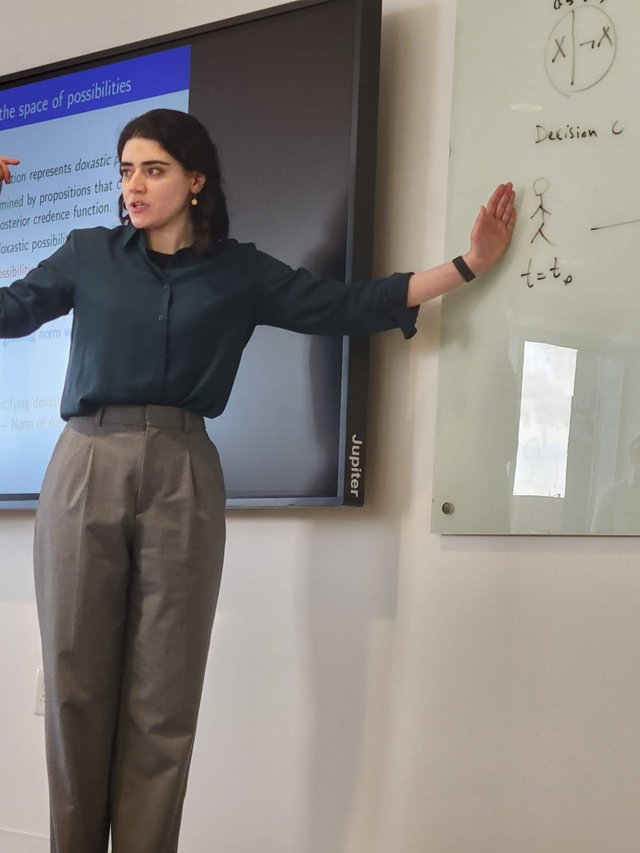

Talks
Forthcoming
Rational Resistance to Correctionconference
Rational Resistance to Correctioninvited
Longtermism and Revolution
Past
Mind Your Probability Languageinvited
Choosing Moral Arguments in Social Movements: A Rational Choice Framework
The Ethics of Foreign Interventionpanel
Rational Resistance to Correction
Mind Your Probability Languageinvitedcancelled
Mind Your Probability Language
Mind Your Probability Language
Unconvinced Yet Influenced: Vaccine Decision-Making in the Shadow of Misinformationinvited
A Real Bayesian Has Faith in Youinvited
Probably Scientific, Definitely Political, I Don't Believe it
Stereotypes destabilize statistically-grounded credences
Stereotypes destabilize statistically-grounded credences
Generic Statements and Harmful Social Stereotypes
Generic Statements and Harmful Social Stereotypes
Stereotypes destabilize statistically-grounded credences
There is more to Probabilities than Meets the Eye: How Private Information can be Inferred from Announced Credences
There is more to Probabilities than Meets the Eye: How Private Information can be Inferred from Announced Credences
Putnam and the Reality of Time
